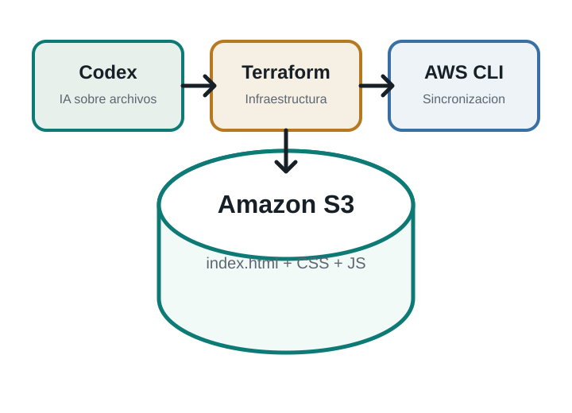

Terraform
Terraform permite definir recursos cloud en archivos de código. En esta práctica se utiliza para declarar y gestionar el bucket S3.
Práctica DevOps 00
Proyecto creado con Codex, Terraform y AWS CLI para publicar una página estática en un bucket S3 gestionado como infraestructura como código.

David
Terraform permite definir recursos cloud en archivos de código. En esta práctica se utiliza para declarar y gestionar el bucket S3.
Amazon S3 almacena objetos como HTML, CSS, JavaScript e imágenes. Con la configuración adecuada también puede servir una web estática.
MCP conecta asistentes de IA con herramientas externas. En este flujo, Codex trabaja sobre los archivos del proyecto y ayuda a validar los cambios.
Bucket objetivo: devops-prueba-david-2026-v2
La infraestructura queda definida en Terraform. Los archivos estáticos pueden subirse con AWS CLI cuando las credenciales temporales del Learner Lab estén cargadas en PowerShell.
Última revisión local: pendiente